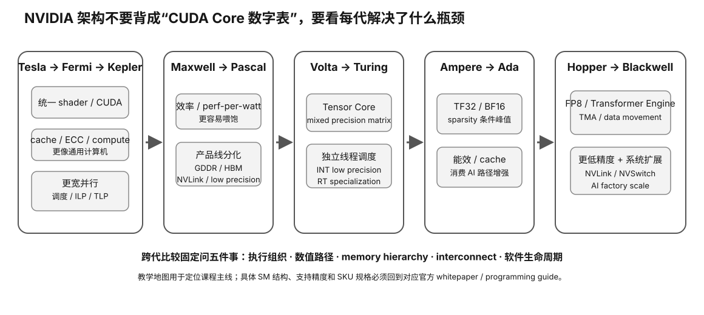

NVIDIA Architecture · 2/5 · L0→L1
NVIDIA 架构主线（二）：Maxwell → Pascal
这两代最值得学的不是“帧数进步”，而是 NVIDIA 如何围绕每瓦吞吐、SM 资源组织、内存效率、低精度与高带宽计算继续重构 GPU。它们也是你理解大量二手消费卡与早期深度学习卡价值差异的关键节点。

Prerequisite Check
先能解释 SM/warp、latency hiding、shared memory/cache 的作用。如果忘了，回看上一节；不要求记具体核心数或发布时间。
真实问题：为什么“同样很多 CUDA Core”的两代卡，每瓦性能和可用场景会差很多？
扩大一个 SM 并不断堆执行单元，会遇到调度、供电、寄存器、shared memory、cache 与控制逻辑的效率问题。Maxwell 的重点之一，就是重新组织 SM，让每组执行资源和调度更紧密，减少为了追求宽度而浪费的能耗。
1. Maxwell：性能不是只靠“更多”，还靠“更容易喂饱”
理解 Maxwell 可以先用“把一个大车间拆成更自治的小生产线”来类比。执行资源、warp scheduler、register/shared 等组织更细，使实际 workload 更容易使用已有晶体管。
每瓦性能为什么重要？
消费 GPU 受板卡功耗、散热、噪声和供电限制。若每完成一份工作所需能量降低，厂商可以在相似功耗范围内提供更多持续吞吐。本地 LLM 同样受这个约束：长期 decode、批处理或服务负载会把瞬时峰值变成热稳态问题。
内存效率同样是架构能力
显存带宽很贵。除了增加总线宽度/速率，还可以通过 cache、压缩与访问效率减少真正需要穿过 DRAM 的字节。以后看到“带宽相近但性能不同”，要想到有效数据流量可能已经被架构改变。
2. Pascal：消费图形与数据中心计算开始更明显分化
Pascal family 覆盖的芯片和产品定位非常广。消费卡与高端计算产品不能只用“都是 Pascal”概括。数据中心方向引入/强化的特性可能包含不同的 FP64/FP16 吞吐、HBM、高速互联与更适合 HPC/DL 的资源组合，而消费 SKU 追求的是另一种成本/图形平衡。
这为什么对二手卡特别重要？
architecture name = Pascal ≠ same die ≠ same memory technology ≠ same FP16/FP64 ratio ≠ same interconnect ≠ same product support lifecycle
因此“P100 很强，所以 GTX 10 系也一样有这些计算优势”是典型错误推理。
3. 低精度为什么开始变得更重要？
深度学习并不总需要 FP64。若模型能容忍较低数值精度，就能用更少字节保存数据，并让某些硬件一次处理更多元素。Pascal 时期低精度计算的重要性快速上升，为后续 Tensor Core 的专用矩阵路径铺路。
但要注意两个层次：
- 数据格式存在：硬件/ISA 能表示或处理 FP16 等类型；
- 应用能高效利用：库、kernel、累加策略和特定 SKU 的吞吐比例真的有优势。
4. HBM 与 GDDR：不要把“显存容量”和“显存系统”混成一个数字
高端计算 Pascal 产品使用 HBM，而大量消费卡使用 GDDR。对 LLM 来说，至少要把以下信息分开：
| 维度 | 影响 |
|---|---|
| 容量 | 模型权重、KV cache、buffer 能否放下 |
| 带宽 | decode/流式权重读取等 workload 的上限 |
| 延迟/访问模式 | 小而不规则访问的代价 |
| ECC/可靠性 | 长时间计算、数据中心场景 |
| 封装/成本 | 二手价格、维修和整机适配 |
Worked Example：GTX 1080 Ti 与 P100 为什么不能只比“哪张更新”？
不需要记住它们的具体 benchmark。只要按决策树拆：
- 目标模型能否放入各自可用显存？
- 目标 backend/driver 今天是否支持？
- 所需 precision/kernel 在 exact GPU 上是否高效？
- memory bandwidth 和容量哪个是当前瓶颈？
- 板卡形态、散热、供电、接口是否适合家用？
- 当前价格是否足以补偿软件生命周期和能耗风险？
这比“数据中心卡一定比游戏卡强”或“游戏卡一定更好用”更可靠。
Why it matters
- Maxwell 教你看效率和资源组织，而不是只看执行单元数量。
- Pascal 教你区分architecture family 与具体市场/芯片变体。
- 低精度演化告诉你：AI 性能要同时看 dtype、吞吐比例和软件 kernel。
- HBM/GDDR 差异提醒你：LLM 的“显存”至少包含容量和带宽两个独立约束。
- 大量二手 NVIDIA 卡正来自这些代际，软件支持和功耗常比历史峰值算力更决定今天价值。
常见误区
- “Pascal 都有一样的 FP16/FP64 能力”——错，必须具体到芯片/SKU。
- “HBM 一定让所有 workload 更快”——错，只有带宽/访问成为相关瓶颈时才直接受益。
- “显存越大越好”——容量是 hard gate，但放得下以后还要看速度、软件和整机成本。
- “Maxwell 没 Tensor Core，所以学习价值低”——错，它能帮助理解能效、调度与内存效率如何决定实际吞吐。
小实验与预期观察
继续 Experiment 23 的 generation feature trap 表。任选一个 Maxwell 和一个 Pascal SKU，仅用第一方/可靠规格建立：architecture、exact chip、VRAM、memory type/bandwidth、precision claims、当前 runtime support 五列。预期你会发现“同一代”内部差异足以破坏简单排名。
无对应硬件路径
L0 完全可以只做规格与支持矩阵。不要为了课程购买旧 Maxwell/Pascal 卡。若你恰好有卡，L1 只读取设备信息并运行课程规定的安全 benchmark；不刷 BIOS、不超压。
排错
- 规格站数字冲突：回到厂商 product brief / whitepaper，并记录 SKU/芯片而非只记系列名。
- 理论 FP16 很高但应用没加速：确认 exact instruction path、kernel、累加格式和 backend。
- 数据中心卡便宜但装机困难：把散热形式、供电、显示输出、PCIe/机箱当作系统约束，不把“便宜算力”孤立看。
Retrieval Practice
- Maxwell 为什么说明“更宽”不一定比“更容易利用”更重要？
- 为什么 Pascal family 内部不能用一个规格代表全部产品？
- 低精度同时怎样影响存储字节数和计算吞吐？为什么应用未必自动受益？
- HBM 的价值主要解决什么？它不能解决什么？
- 看到一张廉价旧 Tesla/Pascal 数据中心卡，你会先列哪些整机风险？
- 如何把“每瓦吞吐”迁移到长期本地 LLM 服务的电费/噪声判断？
Decision Rule
完成本课后，你可以用效率、memory system、precision 和 SKU segmentation 解释 Maxwell/Pascal；不能用 architecture 名称或数据中心/消费标签直接做购买决定。任何今日可用性都必须重新查 driver/runtime/backend。
Transfer
下一节 Volta/Turing 会把低精度矩阵加速正式专用化。学习时继续追问：这是通用 CUDA core 的改进，还是新专用 datapath？目标软件怎样显式命中它？
完成证据
完成本课后，保留一份 learner-owned completion artifact，至少包含：
- 用自己的话画出或写出本节最小 mental model，并标出关键变量/资源层；
- 完成本节小实验、worksheet 或无硬件 fallback；有真机时链接 raw Evidence，没有真机时明确标 L0 / DOCUMENTED / DEFERRED-HARDWARE；
- 写一条绑定 Evidence 的 PASS / FAIL / UNKNOWN / BLOCKED 结论，说明它怎样影响本地 LLM 的容量、性能、兼容、成本或风险判断；
- 写一句明确 non-claim：这份证据还不能证明什么。
只写“看完了”或抄规格表不算完成。课程要的是可复查的推理产物，而不是阅读打卡。